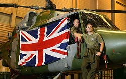

Republic of Cyprus Flag and other Flags in Cyprus
British flag in Cyprus

British flag in Cyprus Cyprus had been a colony of Britain since 1925 and under the 1960 Treaty of Establishment of the Republic of Cyprus, the British sovereign base areas of Akrotiri and Dhekelia would remain under British jurisdiction. The British bases territory covers 2,7% of the land area of the island, or 96 square miles. The villages of Xylotymbou and Ormidhia and Dhekelia power station are enclaves of the Republic of Cyprus surrounded by the Dhekelia military base. The headquarters of the British bases is located at Episkopi. The British bases in Cyprus contain a British listening post, and the only fully fledged RAF station in the Mediterranean, RAF Akrotiri. In addition to the garrison, the UK makes a contribution to the United Nations force (UNFICYP) in Cyprus. In total, some 3,500 British personnel are based in Cyprus. British flag in Cyprus in the news
|